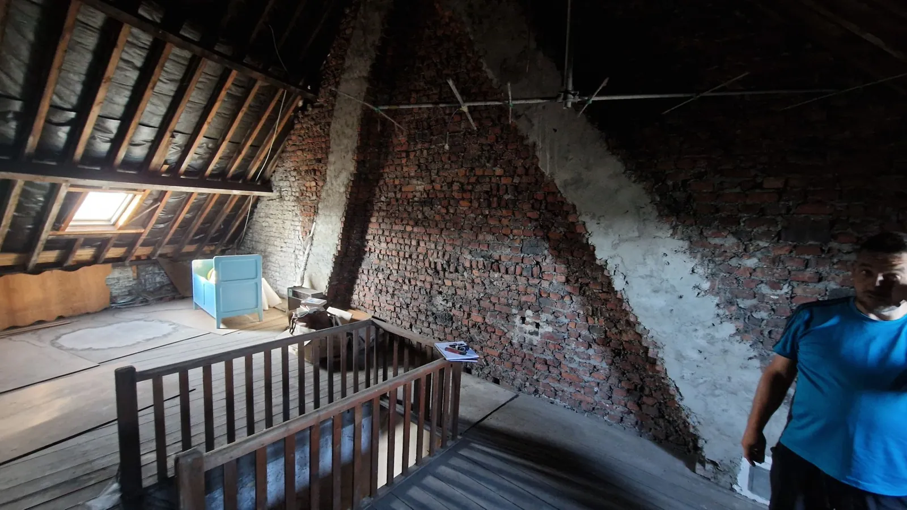
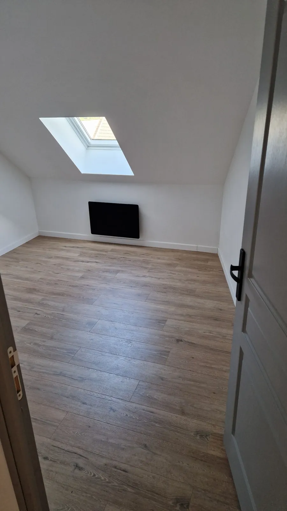

Rénover,isoler,économiser
Michael, artisan indépendant
Rénovation tous corps d’état, du sol au toit : salle de bain, isolation, toiture, fenêtres et volets, peinture, électricité et plomberie. Et du dépannage quand quelque chose lâche.


Tous corps d’état, un seul interlocuteur
Une rénovation complète ou un seul poste, et le dépannage en plus. Le fil rouge : une maison mieux isolée qui consomme moins. Pas de sous-traitance en cascade, c’est moi qui viens et c’est moi qui fais.
Ce que vous ne verrez plus
Un mur fini, c’est cinq couches. Les quatre premières disparaissent sous la peinture. C’est pourtant là que se jouent le confort, la facture de chauffage et la durée.
Les derniers chantiers
Chaque chantier est raconté en photos, du premier coup d’œil à la remise des clés.
Comment je travaille
Je viens voir
Sur place, je regarde le support, je mesure, j’écoute ce que vous voulez.
Devis détaillé
Gratuit, poste par poste, avec une date de démarrage.
Chantier propre
Protections posées, gravats évacués, rangé chaque soir.
On réceptionne
On fait le tour ensemble. Si un détail ne va pas, je reviens.
Un projet ? Appelez, je réponds entre deux chantiers.
06 39 98 12 34Ou laissez un message avec le formulaire de devis. Je rappelle sous 48 h (délai à confirmer).